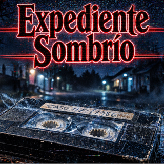

Estudio Expediente Sombrío
Herramienta personal del canal Expediente Sombrío, un canal de videos cortos sobre leyendas, críptidos y misterios de internet.
El estudio se ejecuta solo en el equipo del creador del canal. Con su autorización:
- programa los Shorts del canal en YouTube;
- envía los videos como borrador a la bandeja de TikTok del propio creador, que los revisa y publica desde la app;
- lee estadísticas básicas de los dos canales (seguidores, vistas e interacción) para mejorar el contenido.
No es un servicio para el público: solo la usa el creador del canal con sus propias cuentas.